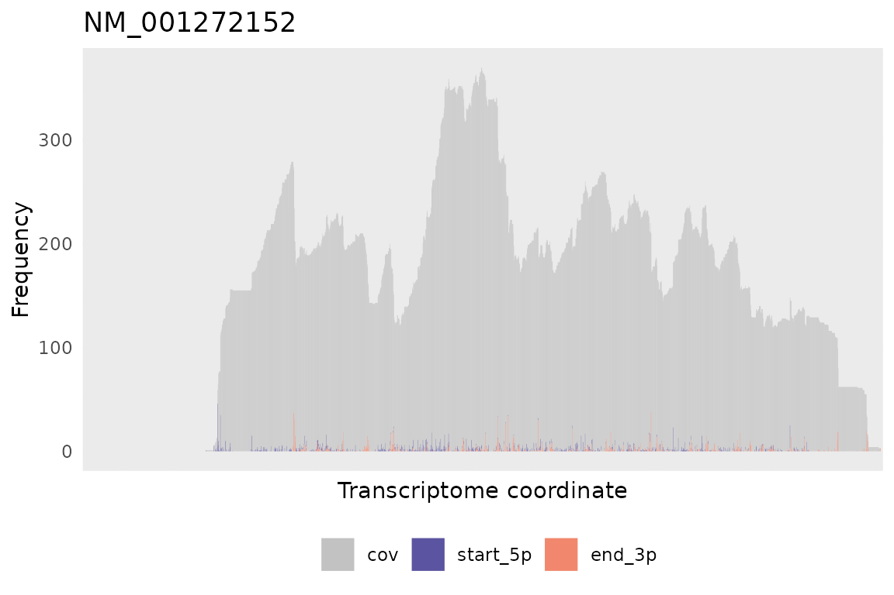
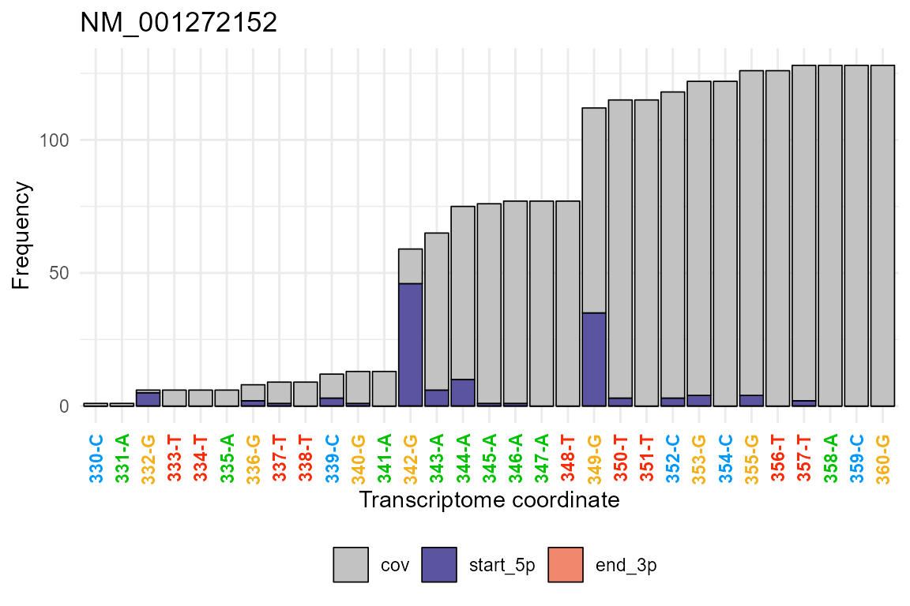
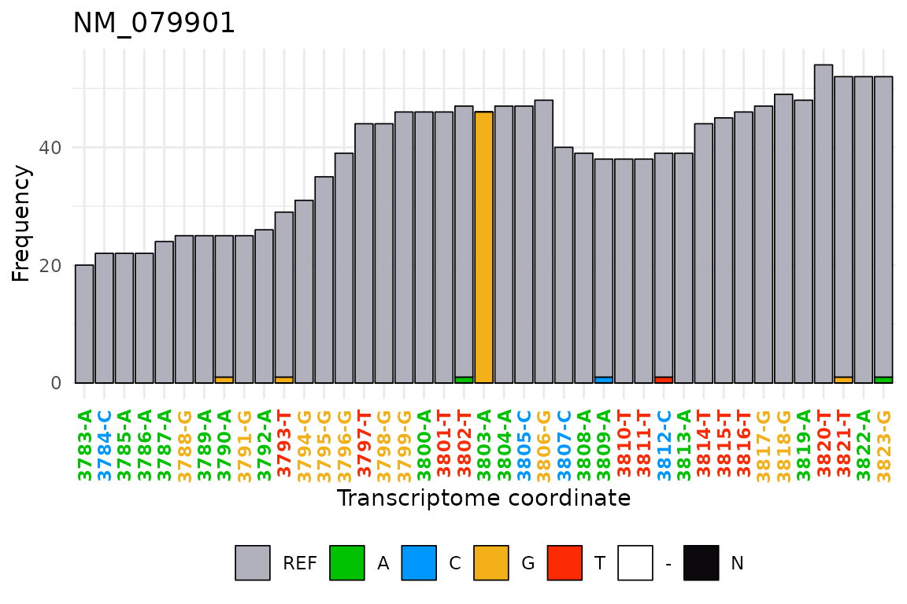
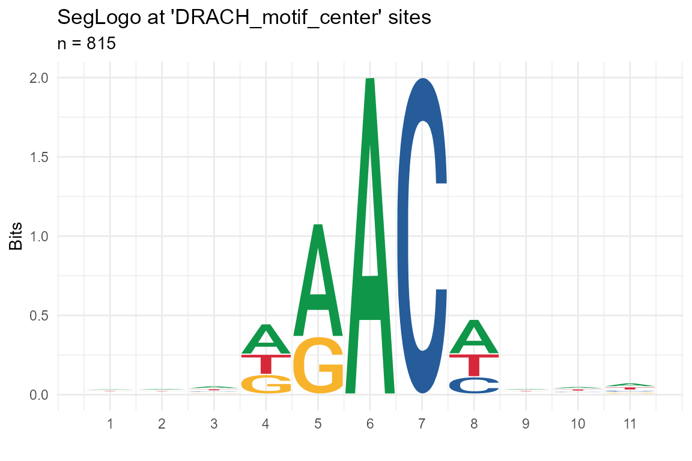
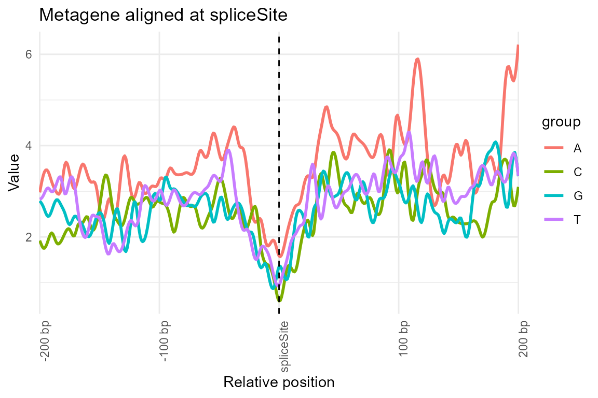
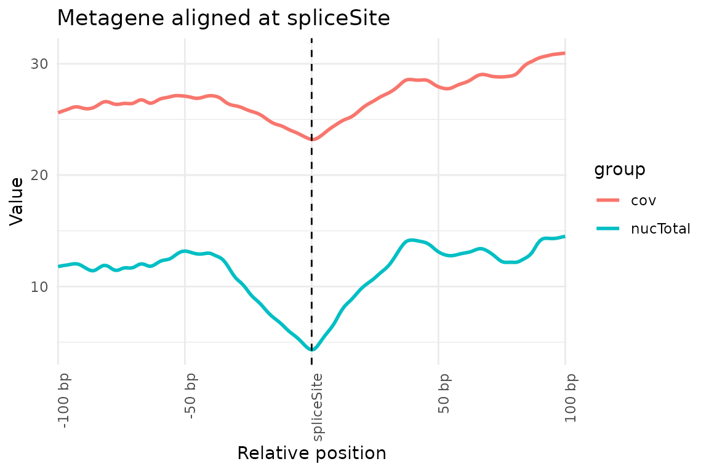
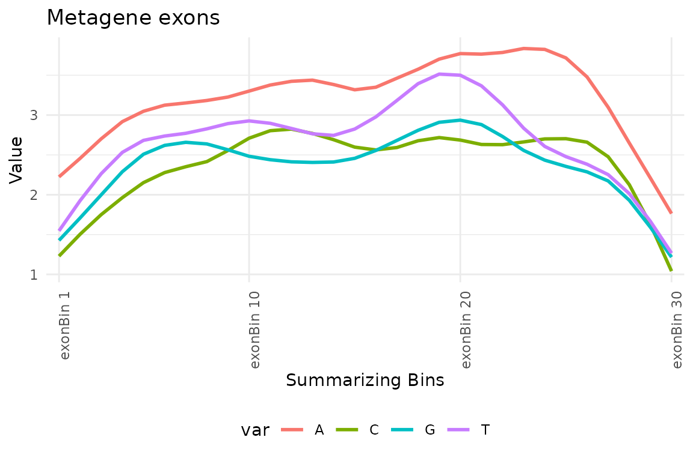
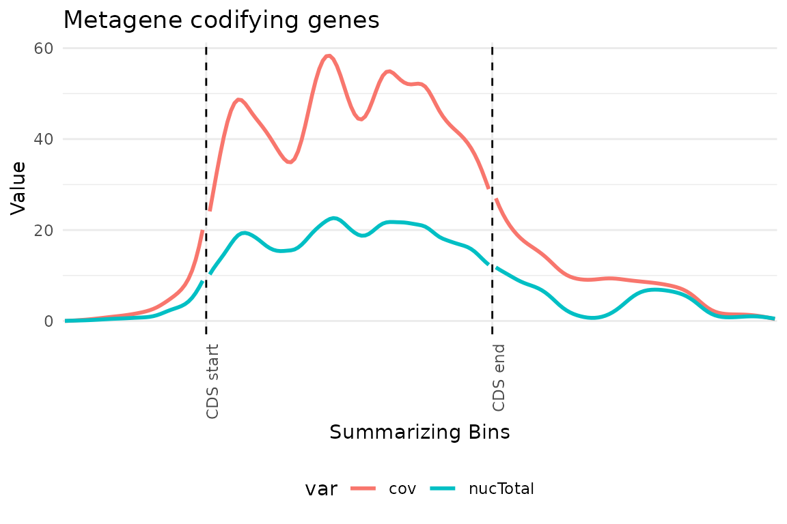

txtools User Guide
Miguel Angel Garcia-Campos
txtools.RmdAbstract
txtools is an R package for processing and analysis of transcriptomic data.
Introduction
The following is a quick but in-depth tutorial showing all of txtools ‘core’ functions.
We will show how to:
- Load read-alignments data, and the genomic and transcriptomic reference files into R.
- Assign alignments to genes.
- Summarize mapped-reads into different kinds of tables.
- Use tx_add_* functions to add useful data and calculated metrics to the summarized tables.
- Plot regions and analyses results using the tx_plot_* functions family.
- Use tx_get_*() functions to extract non-standard information structures from txtools tables.
- Use tx_test_*() functions to apply statiscal testing to detect transcriptomics positions that have unexpected values at either continuous or count data variables.
The aim of txtools is to provide a versatile framework to analyze transcriptomic data in a simple manner. To accomplish this we propose the processing of data in two stages:
- Transfer read-alignments from a genomic to a transcriptomic coordinates space.
- Summarize transcriptomic-alignments into table structures.

The intermediate output in Step 1 is of class GRanges
from the GenomicRanges
package, while that of Step 2, and final output of the main txtools
processing pipeline, is of class data.table from the data.table
package, which is an extension of the data.frame class.
Current txtools development has favored functionality on the more common table structure, as it offers extendability and versatility but at the price of big memory allocation. This should be considered when developing analysis pipelines using txtools. Users will benefit benefit of not using the whole transcriptome at early development stages, unless necessary, and instead use a subset of the gene annotation while developing the analysis pipeline and only at late stages run over the complete transcriptome.
For this example we will use the data of the pasillaBamSubset package. A subset of reads aligned to the chromosome 4 of D. melanogaster.
Loading data tx_load_*()
To work with the reads in the transcriptomic space, txtools requires
a Gene Annotation file in the form of a BED-12 or BED-6
file, loaded with tx_load_bed().
Importantly, a BED-12 file contains the information to construct the exon structure, when using a BED-6 file, txtools will assume that the genes in the annotation consist of a single exon block.
BED_path <- tx_dm3_geneAnnot() # geneAnnot built-in txtools
geneAnnot <- tx_load_bed(BED_path)Additionally, it is recommended to have a Reference
Genome sequence file in the form of a FASTA file, in which each
entry corresponds to a chromosome, loaded with
tx_load_genome().
FASTA_path <- pasillaBamSubset::dm3_chr4() # D. melanogaster chr4 built-in pasillaBamSubset
genome <- tx_load_genome(fastaFile = FASTA_path)The main data that we will work with and process using txtools are
read mappings, or read alignments, in the form of BAM
files. These files can be loaded into R using
tx_load_bam(). In this case we will set the
pairedEnd argument to TRUE, to specify that the library is
paired-end; as we will use the sequence information from the alignments
we need to set the loadSeq argument also to TRUE.
BAM_path <- pasillaBamSubset::untreated3_chr4() # Paired-end BAM file built-in pasillaBamSubset
genAligns <- tx_load_bam(file = BAM_path, pairedEnd = TRUE, loadSeq = TRUE)
#> Reading number of records in file
#> 175346 number of BAM records
#> Loading BAM file
#>
|
| | 0%
|
|======================================================================| 100%
#> 0 reads filtered out for empty sequence field
#> 75409 Reads succesfully loaded
#> Dumped ambiguous reads: 0These three functions make loading the necessary input data a painless process.
Assigning alignments to genes tx_reads()
Reads mapped to a reference genome have to be assigned and processed
to their genes. This is done using tx_reads().
tx_reads() accepts bam files loaded with
tx_load_bam() recognizing if they are paired-end or
single-end libraries. Additionally it is required to provide a
gene-annotation as loaded with tx_load_bed().
By default tx_reads() will only process genes with
50 or more reads, will not output the processed sequence for
each read, and will use only one core; all these options can be
changed in its arguments.
txReads <- tx_reads(genAligns, geneAnnot = geneAnnot, minReads = 1, withSeq = TRUE)
#> Warning in rmAmbigStrandAligns(reads): Removing 63 alignments with ambiguous strand (*)
#> Processing 75346 reads, using 10 gene models.
#> 10373 alignments overlap 10 gene models
#> Assigning alignments to gene model...
#> Processing sequences. This may take several minutes depending on geneAnnot size ...
#> Output contains: 7176 unique alignments in 10 gene models
#> Warning in tx_reads(genAligns, geneAnnot = geneAnnot, minReads = 1, withSeq =
#> TRUE): Some alignments were not assigned to any gene, you can retrieve them
#> using the tx_get_unassignedAlignments() function.To retrieve the genomic reads that where not assigned to any gene,
due to being outside of the gene annotation, you can use
tx_getUnassignedAlignments(). Background on the
GenomicRanges package is necessary for further
examination and manipulation of not assigned reads
tx_getUnassignedAlignments()
#> Warning: `tx_getUnassignedAlignments()` was deprecated in txtools 1.0.0.
#> ℹ Please use `tx_get_unassignedAlignments()` instead.
#> This warning is displayed once every 8 hours.
#> Call `lifecycle::last_lifecycle_warnings()` to see where this warning was
#> generated.
#> GAlignmentPairs object with 68170 pairs, strandMode=1, and 0 metadata columns:
#> seqnames strand : ranges -- ranges
#> <Rle> <Rle> : <IRanges> -- <IRanges>
#> SRR031715.1138209 chr4 + : 169-205 -- 326-362
#> SRR031714.756385 chr4 + : 943-979 -- 1086-1122
#> SRR031714.2355189 chr4 + : 944-980 -- 1119-1155
#> SRR031714.5054563 chr4 + : 946-982 -- 986-1022
#> SRR031715.1722593 chr4 + : 966-1002 -- 1108-1144
#> ... ... ... ... ... ... ...
#> SRR031714.2561111 chr4 - : 1348209-1348245 -- 1348063-1348099
#> SRR031715.2322156 chr4 - : 1348211-1348247 -- 1348077-1348113
#> SRR031715.2887514 chr4 + : 1348217-1348253 -- 1348215-1348251
#> SRR031714.1650928 chr4 + : 1349196-1349232 -- 1349326-1349362
#> SRR031714.1650928 chr4 + : 1349708-1349744 -- 1349838-1349874
#> -------
#> seqinfo: 8 sequences from an unspecified genomeIn this toy example most reads are not mapped as we only used a gene annotation with ten genes for assigning reads.
The resulting object txReads comprises a list of
GRanges, genomic ranges by name, but which consist of the ranges of the
mapped reads in the transcriptomic space, not in genomic space.
Summarizing reads into a txDT tx_makeDT_*()
After consolidating the paired-end reads, assigning them to their respective genes and converting their ranges into transcriptomic space, we can summarize their data into table format. These tables contain data such as the coverage, and nucleotide frequency counts; each of the rows in the table corresponds to a nucleotide position unique in the transcriptome, but could have duplicated genomic coordinate, as is the case for overlapping genes.
By default R base uses the class object data.frame to
accomodate table data structures which contain different classes of data
per column. For the case of txtools we have opted to use the class
object data.table
from the eponymous package, as the data.table object operates very
similar to base-R’s data.frames yet are optimized for speedier
calculations and assignment.
There are three functions to generate summarized txDTs, each containing summarized data per nucleotide position in the transcriptome:
-
tx_makeDT_coverage(): Generates a table with coverage, read-starts, and read-ends counts data.
DT_cov <- tx_makeDT_coverage(txReads, geneAnnot = geneAnnot)
DT_cov
#> chr gencoor strand gene txcoor cov start_5p end_3p
#> 1: chr4 150475 - NM_001169348 1 0 0 0
#> 2: chr4 150474 - NM_001169348 2 0 0 0
#> 3: chr4 150473 - NM_001169348 3 0 0 0
#> 4: chr4 150472 - NM_001169348 4 0 0 0
#> 5: chr4 150471 - NM_001169348 5 0 0 0
#> ---
#> 42061: chr4 1133504 - NM_001297793 6073 0 0 0
#> 42062: chr4 1133503 - NM_001297793 6074 0 0 0
#> 42063: chr4 1133502 - NM_001297793 6075 0 0 0
#> 42064: chr4 1133501 - NM_001297793 6076 0 0 0
#> 42065: chr4 1133500 - NM_001297793 6077 0 0 0-
tx_makeDT_nucFreq(): Generates a table with nucleotide frequencies for each of the four main aminoacids, unidentified nucleotide (N), deletions (-), and insert counts (.). The latter are generated when using paired-end reads that didn’t overlap with each other, and have an unidentified sequence between Read1 and Read2.
DT_nucFreq <- tx_makeDT_nucFreq(txReads, geneAnnot = geneAnnot)
DT_nucFreq
#> chr gencoor strand gene txcoor A C G T N - .
#> 1: chr4 150475 - NM_001169348 1 0 0 0 0 0 0 0
#> 2: chr4 150474 - NM_001169348 2 0 0 0 0 0 0 0
#> 3: chr4 150473 - NM_001169348 3 0 0 0 0 0 0 0
#> 4: chr4 150472 - NM_001169348 4 0 0 0 0 0 0 0
#> 5: chr4 150471 - NM_001169348 5 0 0 0 0 0 0 0
#> ---
#> 42061: chr4 1133504 - NM_001297793 6073 0 0 0 0 0 0 0
#> 42062: chr4 1133503 - NM_001297793 6074 0 0 0 0 0 0 0
#> 42063: chr4 1133502 - NM_001297793 6075 0 0 0 0 0 0 0
#> 42064: chr4 1133501 - NM_001297793 6076 0 0 0 0 0 0 0
#> 42065: chr4 1133500 - NM_001297793 6077 0 0 0 0 0 0 0-
tx_makeDT_covNucFreq(): Generates a table with all columns from the two previous functions.
DT_covNucFreq <- tx_makeDT_covNucFreq(txReads, geneAnnot = geneAnnot) The three of these tables contain 5 columns that identify each transcriptomic position and link it to their respective genomic position as well:
- chr: Chromosome
- gencoor: Genomic coordinate
- strand: Genomic strand
- gene: Gene name
- txcoor: Transcriptomic coordinate, or relative coordinate in the transcript.
txcoor includes UTR regions if present, i.e. the
first nucleotide of the 5’UTR is considered to be position
“1”.
Additionally, in each of the functions when the genome
argument is input with its corresponding reference genome sequence, the
nucleotide identity per position is added in the column
refSeq.
DT_covNucFreq <- tx_makeDT_covNucFreq(txReads, geneAnnot = geneAnnot, genome = genome)
DT_covNucFreq
#> chr gencoor strand gene txcoor refSeq cov start_5p end_3p A C G
#> 1: chr4 150475 - NM_001169348 1 C 0 0 0 0 0 0
#> 2: chr4 150474 - NM_001169348 2 T 0 0 0 0 0 0
#> 3: chr4 150473 - NM_001169348 3 T 0 0 0 0 0 0
#> 4: chr4 150472 - NM_001169348 4 T 0 0 0 0 0 0
#> 5: chr4 150471 - NM_001169348 5 A 0 0 0 0 0 0
#> ---
#> 42061: chr4 1133504 - NM_001297793 6073 A 0 0 0 0 0 0
#> 42062: chr4 1133503 - NM_001297793 6074 A 0 0 0 0 0 0
#> 42063: chr4 1133502 - NM_001297793 6075 T 0 0 0 0 0 0
#> 42064: chr4 1133501 - NM_001297793 6076 T 0 0 0 0 0 0
#> 42065: chr4 1133500 - NM_001297793 6077 C 0 0 0 0 0 0
#> T N - .
#> 1: 0 0 0 0
#> 2: 0 0 0 0
#> 3: 0 0 0 0
#> 4: 0 0 0 0
#> 5: 0 0 0 0
#> ---
#> 42061: 0 0 0 0
#> 42062: 0 0 0 0
#> 42063: 0 0 0 0
#> 42064: 0 0 0 0
#> 42065: 0 0 0 0- Note: The reason for which summarized tables shouldn’t be generated in genomic space is that complex genes, as those from human, have very long introns that would generate too long and sparse tables, yet too heavy in terms of memory allocation.*
Adding useful data and metrics to txDTs tx_add_*()
After generating a txDT we already have all the information we need to do most of our count data analysis. Yet, sometimes we need this data as other metrics or ratios, consider for example the ratio of read-starts compared to coverage, which we call the read-start ratio or more simply startRatio.
We could manually calculate the startRatio by dividing the
start_5p column over the cov column of our
txDT. Yet other metrics in which the limits of the genes are important
would be off calculated, e.g. startRatio 1bp upstream. To easily
calculate different metrics and add additional information to a txDT we
provide a set of functions that start with the tx_add_
prefix.
Adding metrics related to read-starts, read-ends, coverage, and nucleotide frequency.
Additional to the counts of coverage (cov), read-starts (start_5p), read-ends (end_3p), and nucleotide frequencies (A, T, C, G) for each nucleotide in the transcriptome, it can be useful to add certain related metrics.
For example the rate at which reads start compared to coverage, which
we call startRatio. To create such common metrics we provide several
functions under the tx_add_*() functions family. Bellow a
list of them and a brief description of what they add.
-
tx_add_startRatio(): Start to coverage rate -
tx_add_startRatio1bpDS(): Start to coverage rate 1 bp down-stream -
tx_add_startRatio1bpUS(): Start to coverage rate 1 bp up-stream -
tx_add_endRatio(): End to coverage rate -
tx_add_endRatio1bpDS(): End to coverage rate 1 bp down-stream -
tx_add_endRatio1bpUS(): End to coverage rate 1 bp up-stream -
tx_add_nucTotal(): Sum of nucleotide frequencies, not counting undetermined ‘N’ and inserts ‘.’. -
tx_add_misincCount(): Sum of nucleotide reads different to the reference sequence. -
tx_add_misincRate(): Rate of nucleotide reads different to the reference sequence. -
tx_add_misincRateNucSpec(): Rate of misincorporation of an specific nucleotide with respect to a reference nucleotide. e.g. the rate at which ‘T’ was incorporated (or misread) in the RNA instead of a ‘C’. -
tx_add_geneRegion(): Adds the gene region to which the positions correspond: 5’UTR, CDS, 3’UTR, or non-coding.
The result of using a tx_add_() function is the same
txDT input with the difference of a new column of the desired
metric, hence it is possible to chain tx_add functions in
succession with the pipe operator %>% from the **magrittr*
package.*
library("magrittr")
DT_covNucFreq <- DT_covNucFreq %>%
tx_add_startRatio() %>%
tx_add_startRatio1bpDS() %>%
tx_add_startRatio1bpUS() %>%
tx_add_endRatio() %>%
tx_add_endRatio1bpDS() %>%
tx_add_endRatio1bpUS() %>%
tx_add_nucTotal() %>%
tx_add_misincCount() %>%
tx_add_misincRate() %>%
tx_add_misincRateNucSpec(refNuc = "C", misNuc = "T") %>%
tx_add_geneRegion(geneAnnot = geneAnnot)Adding unique position identifier
If needed, by combining the gene and relative coordinate we can
create a single unique identifier for each position in the
transcriptome. We can add this with tx_add_pos().
DT_covNucFreq <- tx_add_pos(DT_covNucFreq)IMPORTANT NOTE: Due to being unique identifiers the
pos column is of character class and it requires a
big amount of memory to be allocated. If not needed is
recommended to omit the pos column or delete it after no
longer is needed.
Adding reference sequence
If the genome sequence was not specified in the tx_makeDT_*()
function call, adding the transcriptomic reference sequence after
generating a txDT is possible with tx_add_refSeqDT().
Importantly, the sequence in refSeq has already been processed to represent the transcriptomic sequence considering the strand of the gene.
Note: Importantly, the nucleotide uracil is represented with the letter “T” instead of with the letter “U”. This might change in future versions if poses a conflict or confusion to the users.
DT_covNucFreq <- tx_add_refSeqDT(DT_covNucFreq, genome = genome, geneAnnot = geneAnnot)Adding sites annotation
Sometimes we want to identify previously annotated positions of a
transcriptome in our data. For this, we can use
tx_add_siteAnnotation() to add a logical vector that
indicates the sites of interest to perform further analysis and
plotting.
To add a sites annotation we only need to input a GRanges object that
consists of ranges of length 1, which can also be loaded with
tx_load_bed().
Here we use the in-built site annotation object
annotSites_RRACH which contains 636 sites that
fall in the arbitrarily selected RRACH motif.
DT_covNucFreq <- tx_add_siteAnnotation(DT_covNucFreq, GRanges = annotSites_RRACH, colName = "annotSites")We will visualize the effect of annotating this RRACH sites with a seqlogo plot in section @ref(ggseqlogo-plot)
Adding sequence motif presence
To mark all the positions at which specific sequences appear on
transcripts in the txDT we can use
tx_add_motifPresence().
Importantly, this function will take a character string that can consist of the characters in the IUPAC nucleotide ambiguity code
DT_covNucFreq <- tx_add_motifPresence(DT_covNucFreq, motif = "DRACH", nucPositions = "center")Adding rolling mean
Sometime we need a smoother version of a metric, which can be
acomplished by computing a roll mean across a moving window. For example
we can smooth the coverage by applying a rolling mean across the
cov column. The winSize argument determines
the length of the window over which the mean is calculatates and the
align.
DT_covNucFreq <- tx_add_rollingMean(DT_covNucFreq, colName = "cov", winSize = 50, align = "left")Plotting functions tx_plot_*()
txtools provides a diverse set of functions to plot. For ease of use
all of them start with the prefix tx_plot_
Start End Coverage plot
tx_plot_staEndCov(): This plot is useful to visualize
the coverage, read-start, and read-end patterns. The required input is a
txDT, the gene, and the transcriptomic range to be plot.
It can be used to plot the whole gene as bellow:
tx_plot_staEndCov(DT_covNucFreq, gene = "NM_001272152", show_yLabels = FALSE, bar_border = FALSE)
Or part of the gene specifying the relative coordinates range in the
txRange argument.
tx_plot_staEndCov(DT_covNucFreq, gene = "NM_001272152", txRange = 330:360)
Nucleotide frequency plot
tx_plot_nucFreq(): This plot shows the nucleotide
frequency and importantly, shows in color the nucleotides that are not
matching the reference sequence. It is useful to visualize
misincorporation rate, which can be originated due to a SNP, chemical
treatment on RNA or (less informative) sequencing errors.
Importantly, this plot show the coverage due to inserts, which has not been assigned a nucleotide identity, as is the unsequenced gap between read1 and read2 in paired-end libraries
selSite <- DT_covNucFreq[which(misincRate > 0.5 & nucTotal > 40),
c("gene", "txcoor", "cov", "nucTotal", "misincCount", "misincRate")]
selSite
#> gene txcoor cov nucTotal misincCount misincRate
#> 1: NM_079901 3803 90 46 46 1
tx_plot_nucFreq(DT_covNucFreq, gene = selSite$gene, txRange = window_around(selSite$txcoor, 20), removeInsert = T)
ggseqlogo plot
tx_plot_ggseqlogo(): This function allows to quickly
plot a ggseqlogo
using as input a txDT and a logical annotation which marks the center
position to be plot. It is useful to identify motif sequences in sites
that have been selected, for example for passing certain thresholds of
specific metrics.
In this example we use the sites we annotated while using
tx_add_motifPresence() for annotating the DRACH
motifs in our small transcriptome set.
tx_plot_ggseqlogo(DT_covNucFreq, logi_col = "DRACH_motif_center", upFlank = 5, doFlank = 5)
#> Warning in tx_get_flankSequence(DT = DT, logi_col = logi_col, upFlank =
#> upFlank, : Some sequences reached the end of transcript, a '.' was added in
#> place, which may affect downstream results.
#> Warning: The `<scale>` argument of `guides()` cannot be `FALSE`. Use "none" instead as
#> of ggplot2 3.3.4.
#> ℹ The deprecated feature was likely used in the ggseqlogo package.
#> Please report the issue at <https://github.com/omarwagih/ggseqlogo/issues>.
#> This warning is displayed once every 8 hours.
#> Call `lifecycle::last_lifecycle_warnings()` to see where this warning was
#> generated.
Metagene plot at CDS start/end
tx_plot_metageneAtCDS(): Calculates and plots metagenes
using as input a txDT and the column names of the metrics to be
plot.
tx_plot_metageneAtCDS(txDT = DT_covNucFreq, geneAnnot = geneAnnot,
colVars = c("A", "G", "C", "T"), CDS_align = "spliceSite",
upFlank = 200, doFlank = 200)
tx_plot_metageneAtCDS(txDT = DT_covNucFreq, geneAnnot = geneAnnot,
colVars = c("cov", "nucTotal"), CDS_align = "spliceSite",
upFlank = 100, doFlank = 100)
tx_plot_metageneExons(txDT = DT_covNucFreq, colVars = c("A", "T", "G", "C"), nBins = 30, geneAnnot = geneAnnot)
#> Warning in tx_get_metageneExons(txDT = txDT, colVars = colVars, nBins = nBins,
#> : exonNumber is needed in txDT to extract exons, this function calculates it
#> but discards it everytime. If you want to keep them please add it to the txDT
#> by using tx_add_exonNumber()
tx_plot_metageneRegions(txDT = DT_covNucFreq, colVars = c("cov", "nucTotal"),
geneAnnot = geneAnnot, nBins_5UTR = 40, nBins_CDS = 80,
nBins_3UTR = 80, summ_fun = "mean")
#> Running using 1 core.
#> Consider increasing the 'nCores' argument if function takes too long
Get functions tx_get_*()
Get flanks from annotation
tx_get_flanksFromLogicAnnot(): Extracts the surrounding
values of annotates sites from any column. The required input is the
txDT containing the column from were the values will be extracted alogn
a logical vector marking the annotated sites (TRUE = site of interest,
FALSE = not annotated site). The output is a matrix in which rows
correspond to annoted sites, and columns to the values at each of the
positions up-stream, center, and down-stream from the site of
interest.
Getting this values may be useful to confirm results derived from
previous analysis, or to generate an aggregated analysis of the sites of
interest. Bellow is an example in which we extract the coverage of the
sites annotated in the DRACH_motif_center column.
tx_get_flanksFromLogicAnnot(DT_covNucFreq, logi_col = "DRACH_motif_center",
values_col = "cov", upFlank = 4, doFlank = 4) %>% head(5)
#> -4 bp -3 bp -2 bp -1 bp DRACH_motif_center 1 bp 2 bp 3 bp 4 bp
#> NM_001169348:97 10 10 10 10 10 12 12 12 12
#> NM_001169348:108 12 12 12 12 12 13 13 13 13
#> NM_001169348:120 15 15 15 15 15 15 15 15 16
#> NM_001169348:148 17 17 17 17 17 17 17 17 17
#> NM_001169348:170 17 17 17 17 17 17 17 17 18Getting flanking sequences
tx_get_flankSequence(): Extracts the contiguous sequence
of sites of interest. Works similarly to
tx_get_flanksFromLogicAnnot() but it is a specific case for
getting only the sequences in a collapsed format. Its output is a
character vector in which each element is the sequence at the site of
interest and its upstream and downstream flanking regions.
Bellow is an example showing the flanking sequence of the sites
annotated in the DRACH_morif_center column.
tx_get_flankSequence(DT_covNucFreq, logi_col = "DRACH_motif_center",
upFlank = 4, doFlank = 4) %>% head(5)
#> Warning in tx_get_flankSequence(DT_covNucFreq, logi_col = "DRACH_motif_center",
#> : Some sequences reached the end of transcript, a '.' was added in place, which
#> may affect downstream results.
#> [1] "GAGAACAAA" "ACAAACAAG" "TGAAACCTG" "TTAGACAAC" "TAAAACAGA"Get gene lengths
tx_get_geneLengths: Gets the length of genes contained
in a txDT, as measured by the number of positions (rows) the gene has in
the table.
tx_get_geneLengths(DT_covNucFreq)
#> NM_001169348 NM_001272124 NM_001272152 NM_001297793 NM_079901 NM_143656
#> 5777 3965 2026 6077 5576 2557
#> NM_143665 NM_166736 NM_166777 NM_166788
#> 5357 3050 4068 3612Get metagene values
tx_get_metageneAtCDS(): Gets the metagene profile of
desired column variables, centered at either the start or end of the
CDS.
Bellow is an example in which we retrieve the values of coverage at the start of the CDS as well as upstream and downstream flanks.
tx_get_metageneAtCDS(txDT = DT_covNucFreq, geneAnnot = geneAnnot,
colVars = c("cov", "nucTotal"), CDS_align = "start",
upFlank = 3, doFlank = 5)
#> $cov
#> -3 bp -2 bp -1 bp CDS_start 1 bp 2 bp 3 bp 4 bp 5 bp
#> NM_001169348:69 3 3 3 3 3 3 3 3 4
#> NM_166736:419 4 4 4 4 4 4 4 4 4
#> NM_143656:186 0 0 0 0 0 0 0 0 0
#> NM_001272124:60 2 2 2 2 2 2 2 2 2
#> NM_143665:519 17 17 17 17 17 17 17 17 17
#> NM_166777:357 1 1 1 1 1 1 1 1 1
#> NM_166788:511 7 7 7 7 7 7 7 7 7
#> NM_079901:381 65 65 65 66 66 68 69 68 68
#> NM_001272152:347 75 76 77 77 77 112 115 115 118
#> NM_001297793:188 3 3 3 3 3 3 3 3 3
#>
#> $nucTotal
#> -3 bp -2 bp -1 bp CDS_start 1 bp 2 bp 3 bp 4 bp 5 bp
#> NM_001169348:69 3 3 3 3 3 3 3 3 4
#> NM_166736:419 2 2 2 2 2 2 2 2 2
#> NM_143656:186 0 0 0 0 0 0 0 0 0
#> NM_001272124:60 2 2 2 2 2 2 2 2 2
#> NM_143665:519 5 5 5 6 6 6 7 7 7
#> NM_166777:357 1 1 1 1 1 1 1 1 1
#> NM_166788:511 5 5 5 5 5 5 5 5 5
#> NM_079901:381 11 11 11 12 12 14 15 14 14
#> NM_001272152:347 75 76 77 77 77 111 114 114 117
#> NM_001297793:188 3 3 3 3 3 2 2 2 2Get transcriptome sequences
tx_get_transcriptSeqs(): Retrieves the spliced sequence
of genes. Using as input the reference genome and the gene annotation
loaded with tx_load_bed().
The output of this function can be either a DNAStringSet from the Biostrings package, or (when providing a file name) a FASTA file.
Bellow an example showing the sequences of the genes in the D. melanogaster gene annotation, and the DNAStringSet as output.
tx_get_transcriptSeqs(genome = genome, geneAnnot = geneAnnot)
#> DNAStringSet object of length 10:
#> width seq names
#> [1] 5777 CTTTATAATAATGCAACAGCAGC...CCCCACCGATCTCCCTACCCGG NM_001169348
#> [2] 3050 ACTAAGTAAGTTACTTTTCTATT...GAAATAAAAGGTACACTTAAAT NM_166736
#> [3] 2557 ATTCGAAGTATATTCTTTATGGG...ATATGCAATTGTTTCACCTGCC NM_143656
#> [4] 3965 GCACTGTTGATTTTGGTTTATTT...AAAGTTTAATCAAAAAAATATC NM_001272124
#> [5] 5357 ATTTGGTTTGTTCGAATTATCGC...ATTCTTCCATATAAAGGTAATG NM_143665
#> [6] 4068 TTAATGACGTTATAAAAGTTATC...GCGGTATTCCGGCCTAAATCAT NM_166777
#> [7] 3612 TGCTTTCAGTTCTACTTCGTCGC...AAACTCATAATGTCAACCCCCC NM_166788
#> [8] 5576 AAATGCAACTCTGTTCGTATGAA...CATATGTAAAATAAAGCGAACC NM_079901
#> [9] 2026 ATTTTTTGTCATATATTTTCCAA...ACCTATTTAAACATTACGGTAT NM_001272152
#> [10] 6077 ATTCATATATACTAATGTAATAC...CTGCTCACACGACTTCGAATTC NM_001297793Statistical tests tx_test_*()
txtools provides two functions to perform statistical tests to detect sites that show unexpected values at each site in a treatment group compared to a control group.
t test: In the case of comparing continuous variables a t-test can show the unlikeliness that both groups have the same mean. e.g. whe comparing start to coverage rate.
Likelihood Ratio test (from edgeR package): For comparing count data that are of the type of trial and success between groups, for example when comparing start to coverage ratio but directly with the count data, considering coverage counts as number of trials and the number of read-starts as successes.
Both of these functions require as main input a list of txDTs (txDTL), each txDT representing a sample on the experimental design.
For examples on the usage of the tx_test functions, please consult the case studies vignette available at: [PENDING URL]
Session info
#> R version 4.3.1 (2023-06-16 ucrt)
#> Platform: x86_64-w64-mingw32/x64 (64-bit)
#> Running under: Windows 10 x64 (build 19045)
#>
#> Matrix products: default
#>
#>
#> locale:
#> [1] LC_COLLATE=English_United States.utf8
#> [2] LC_CTYPE=English_United States.utf8
#> [3] LC_MONETARY=English_United States.utf8
#> [4] LC_NUMERIC=C
#> [5] LC_TIME=English_United States.utf8
#>
#> time zone: America/Mexico_City
#> tzcode source: internal
#>
#> attached base packages:
#> [1] stats graphics grDevices utils datasets methods base
#>
#> other attached packages:
#> [1] pasillaBamSubset_0.38.0 BiocStyle_2.28.1 txtools_1.0.3
#> [4] testthat_3.2.1 devtools_2.4.5 usethis_2.2.2
#> [7] magrittr_2.0.3
#>
#> loaded via a namespace (and not attached):
#> [1] rstudioapi_0.15.0 jsonlite_1.8.8
#> [3] farver_2.1.1 rmarkdown_2.25
#> [5] fs_1.6.3 BiocIO_1.10.0
#> [7] zlibbioc_1.46.0 ragg_1.2.7
#> [9] vctrs_0.6.3 memoise_2.0.1
#> [11] Rsamtools_2.16.0 RCurl_1.98-1.12
#> [13] RcppRoll_0.3.0 htmltools_0.5.7
#> [15] S4Arrays_1.2.0 forcats_1.0.0
#> [17] sass_0.4.7 bslib_0.5.1
#> [19] htmlwidgets_1.6.4 desc_1.4.3
#> [21] cachem_1.0.8 GenomicAlignments_1.36.0
#> [23] mime_0.12 lifecycle_1.0.4
#> [25] pkgconfig_2.0.3 Matrix_1.6-1.1
#> [27] R6_2.5.1 fastmap_1.1.1
#> [29] GenomeInfoDbData_1.2.11 MatrixGenerics_1.14.0
#> [31] shiny_1.8.0 digest_0.6.33
#> [33] colorspace_2.1-0 AnnotationDbi_1.64.1
#> [35] S4Vectors_0.38.2 rprojroot_2.0.4
#> [37] pkgload_1.3.4 textshaping_0.3.7
#> [39] GenomicRanges_1.52.0 RSQLite_2.3.1
#> [41] labeling_0.4.3 fansi_1.0.4
#> [43] httr_1.4.7 abind_1.4-5
#> [45] compiler_4.3.1 remotes_2.4.2.1
#> [47] bit64_4.0.5 withr_2.5.0
#> [49] BiocParallel_1.34.2 DBI_1.2.1
#> [51] pkgbuild_1.4.3 DelayedArray_0.26.7
#> [53] sessioninfo_1.2.2 rjson_0.2.21
#> [55] tools_4.3.1 httpuv_1.6.13
#> [57] ggseqlogo_0.1 glue_1.6.2
#> [59] restfulr_0.0.15 promises_1.2.1
#> [61] grid_4.3.1 generics_0.1.3
#> [63] gtable_0.3.4 tidyr_1.3.0
#> [65] data.table_1.14.8 utf8_1.2.3
#> [67] XVector_0.40.0 BiocGenerics_0.48.1
#> [69] pillar_1.9.0 stringr_1.5.0
#> [71] limma_3.56.2 genefilter_1.82.1
#> [73] later_1.3.2 splines_4.3.1
#> [75] dplyr_1.1.3 lattice_0.21-8
#> [77] survival_3.5-7 rtracklayer_1.60.1
#> [79] bit_4.0.5 annotate_1.80.0
#> [81] tidyselect_1.2.0 locfit_1.5-9.8
#> [83] Biostrings_2.68.1 miniUI_0.1.1.1
#> [85] knitr_1.44 bookdown_0.35
#> [87] IRanges_2.34.1 edgeR_3.42.4
#> [89] SummarizedExperiment_1.30.2 stats4_4.3.1
#> [91] xfun_0.40 Biobase_2.60.0
#> [93] brio_1.1.4 matrixStats_1.0.0
#> [95] stringi_1.7.12 yaml_2.3.7
#> [97] evaluate_0.21 codetools_0.2-19
#> [99] tibble_3.2.1 BiocManager_1.30.22
#> [101] cli_3.6.1 xtable_1.8-4
#> [103] systemfonts_1.0.5 munsell_0.5.0
#> [105] jquerylib_0.1.4 Rcpp_1.0.11
#> [107] GenomeInfoDb_1.38.5 png_0.1-8
#> [109] XML_3.99-0.14 parallel_4.3.1
#> [111] ellipsis_0.3.2 pkgdown_2.0.7
#> [113] ggplot2_3.4.3 blob_1.2.4
#> [115] profvis_0.3.8 urlchecker_1.0.1
#> [117] plyranges_1.20.0 bitops_1.0-7
#> [119] scales_1.2.1 purrr_1.0.2
#> [121] crayon_1.5.2 rlang_1.1.1
#> [123] KEGGREST_1.42.0